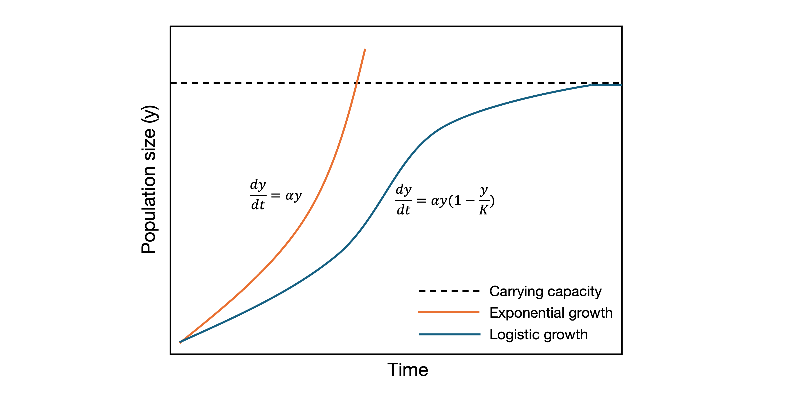

Exponential models are among the most fundamental tools in mathematical modeling. Although real-world phenomena are often too complex to be captured by exponential models alone, requiring adjustments and the inclusion of external factors - these models still serve as essential foundations for many modern, sophisticated mathematical frameworks. This journal documents my study of the core principles of exponential models and their notable applications.
To begin, it’s especially important, particularly for those without a strong mathematical background or for people like me who studied calculus years ago, to revisit the concepts of derivatives and differential equations. Differential is the change in a continuous function \(y = f(x)\) due to small change in \(x\). For instance, between neighboring points \(x\) and \(x+\Delta x\), the change in function is \(f(x+\Delta x)- f(x)\).
The rate of change or relative change of such function is the change in \(f(x)\) divided by the change in \(x\): \[ \frac{f(x+\Delta x)- f(x)}{\Delta x} \] In simple terms, a derivative tells us how a function is changing at one specific point. Imagine we’re looking at how something changes as we slightly change \(x\), just a tiny bit. We make that change in \(x\) (\(\Delta x\)) as small as possible - almost zero! The derivative is like zooming in super close to see how the function is behaving right there, at that tiny moment.
THE EXPONENTIAL GROWTH MODEL
A basic mathematical model for growth (or decay) assumes that at a time \(t\), for a population size \(y\), the change of population with time, \(dy/dt\) , is proportional to the population at that instant. If the population is small, it changes slowly. If the population is large, it changes more rapidly. The growth is multiplicative, which sounds really reasonable. In symbols, \[ \frac{dy}{dt} = \alpha t \] where \(\alpha\) is a coefficient of proportionality / population growth rate / Malthusian paramter. Because this model is also known as Malthusian growth model, which is named after Thomas Robert Malthus, who wrote “An Essay on the Principle of Population” in 1798. To seek the population as a function of time \(y(t)\), we solve as: \[ \frac{dy}{dt} = \alpha y \rightarrow \frac{dy}{y} = \alpha dt \rightarrow \int\frac{1}{y}dy = \int\alpha dt \] \[ \rightarrow lny = \alpha t + C \rightarrow y = e^{\alpha t + C} = e^C + e^{\alpha t} \] Let’s call \(e^C\) as a constant \(C\). For the initial condition at \(t=0\), we have: \[ y(0)= Ce^0= C \] Therefore, \(C\) is \(y(0)\), the population at the beginning. We have the final function for \(y(t)\): \[ y(t)= y(0) e^{\alpha t} \] For growth model, \(\alpha\) is positive. For decay model, which I will mention lately, \(\alpha\) is negative.
One of the most well-known applications of the exponential growth model is population projection for humans, animals, and even bacteria. In his 1798 work An Essay on the Principle of Population, Thomas Robert Malthus not only introduced the idea of exponential population growth but also predicted eventual disaster. He argued that, driven by the natural attraction between the sexes, population could grow rapidly, doubling every 25 years. According to Malthus, this growth would eventually outpace food production, as the human capacity to reproduce would exceed the ability of the land to provide enough resources. He famously wrote, “Population, when unchecked, increases in a geometrical ratio. Subsistence increases only in an arithmetical ratio.” However, this prediction no longer holds true in the modern era, thanks to advances brought by the agricultural and industrial revolutions, which have significantly boosted food production and resource efficiency.
Another common application of exponential growth, to be specific, in finance is continuous compounding. When I first encountered this topic while studying CFA Level 1, I was confused, especially by the sudden appearance of Euler’s number \(e\) in the formula. I wondered: why doesn’t it follow the familiar formula \(P_t=P_0 (1+r)^t\) which I already understood?
At first, I also misunderstood continuous compounding as something that compounds forever. But that’s not quite right. It’s actually about how often compounding happens, annually, quarterly, monthly, weekly, daily, or even every second. Continuous compounding is the theoretical case where compounding happens at every tiny instant, with no gaps at all. This is just like exponential population growth, where change happens at every moment. That’s why using an exponential growth model makes perfect sense here. The formula for the future value \(P_t\) of an amount with continuous compounding through time t and interest rate r is \(P_t= P_0 e^rt\).
THE EXPONENTIAL DECAY MODEL
Decay model describes the population decrease proportionally to its size. The exponential decay occurs when the proportionality factor is negative valued. Model becomes \(y’(t)= -\alpha y(t)\) whose the population \(y\) as a function of time \(t\) is: \[ y(t)= y(0) e^{-\alpha t} \] with \(\alpha>0\).
One of the most common applications of exponential decay is radioactive decay. Many elements found in nature are radioactive, meaning they emit energy as they spontaneously transform into more stable forms. This transformation leads to a gradual decrease in the number of undecayed atoms over time. The process can be measured using instruments like a Geiger counter, which detects the particles or photons emitted during decay. The rate at which radioactive substances decay typically follows an exponential model, where the amount of the substance decreases at a rate proportional to its current quantity, making it a textbook example of exponential decay in action.
A popular measurement of decay is an element’s half-life. The half-life is the time required for an element’s radioactive intensity to fall to one-half of its initial value. For the half life, we can set \(y(t)=\frac{1}{2} y(0)\) to yield \[ \frac{1}{2} y(0)= y(0) e^{-\alpha t} \rightarrow -\alpha t = ln(\frac{1}{2}) \] Building on this property of exponential decay, we arrive at carbon dating, a widely used method in archaeology to estimate the age of once-living organisms. In living beings, the ratio of carbon-12 to carbon-14 is known and remains relatively constant across plants and animals. However, once the organism dies, carbon-14, being radioactive, starts to decay with a known half-life of 5,739 years. Using this information, we can determine the decay constant \(\alpha\) for the exponential decay model. By measuring the current proportion of carbon-14 remaining in a sample, we can estimate how long ago the organism died.
In finance, despite reviewing several studies, I found that the exponential decay model has limited direct application. One exception is in present value calculations involving continuously compounded interest, which mathematically resembles decay. I initially thought the model might apply to estimating loan prepayment rates, since prepayments reduce the outstanding loan balance over time. However, since prepayments usually occur at regular intervals rather than continuously, the exponential decay model doesn’t quite fit in that context.
THE LOGISTIC GROWTH MODEL
One limitation of the exponential growth model is that it doesn’t account for external factors that can either accelerate or slow down population growth. Thomas Robert Malthus’s concern about overpopulation leading to a shortage of resources still raises an important question: what happens if population growth continues unchecked and we eventually run out of food or space? At some point, growth must slow down or stop altogether.
This is where the logistic growth model comes in. It addresses the limitations of exponential growth by assuming that the growth rate is not only proportional to the existing population but also to the amount of remaining resources. As resources become scarce, the growth rate slows, eventually leveling off, creating an S-shaped curve that better reflects real-world population dynamics. \[ \frac{dy}{dt} = \alpha y (1 - \frac{y}{K}) \] where \(K\) is the carrying capacity, the maximum population size (or amount of whatever is growing) that an environment can sustainably support. It’s determined by limited resources such as food, space, water, capital, or market size, depending on the context. Solve this differential equation, we have: \[ \frac{dy}{y(1-\frac{y}{K})} = \alpha dt \rightarrow lny - ln(1-\frac{y}{K}) = \alpha t + C \] \[ y = \frac{K}{1+Ce^{-\alpha t}} \] where \(C\) is a constant determined by the initial condition \(y(0)\). Observing the graph below, we can witness that the logistic growth curve is bounded by carrying capacity K and cannot grow above it. 
Beyond biology, sociology, and demographics, the logistic growth model can also be applied to forecasting economic indicators such as national income, per capita savings, real estate sales, and more. It’s useful in contexts where growth starts rapidly but eventually slows as it approaches a limit or saturation point.
A quick reminder: don’t confuse the logistic growth model with logistic regression. While both share an S-shaped curve, they serve entirely different purposes. Logistic growth models are used to estimate how a population or quantity evolves over time with resource constraints, whereas logistic regression is a statistical method used to estimate probabilities, often for classification problems.
Reference
Sochacki, J. S. (2012). Fundamentals of Calculus. Wiley.